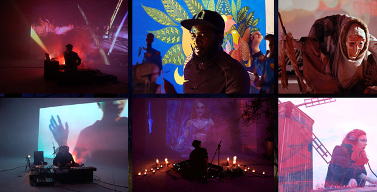
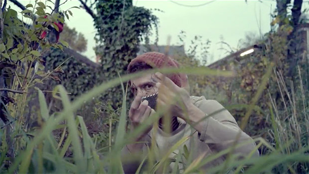

<!DOCTYPE html>
<html lang="en">
<head>
    <meta charset="UTF-8">
    <meta name="viewport" content="width=device-width, initial-scale=1.0">
    <title>Polina Tikk</title>
    <style>
    
        body {
            max-width: 620px;
            margin-left: 10vw;
            margin-right: 10vw;
            font-family: 'Lato', sans-serif;
            background-image: linear-gradient(#9ad3ff, #fddd98,#d3fbfb)
        }
    
    
        h2 {
            font-weight: 300;
            font-size: 24pt;
            letter-spacing: 0.4pt;
            margin-bottom: 0;
        }
        h2 + h2 {
            margin-top: 2em;
        }

        h3 {

            font-weight: 200;
            font-size: 18pt;
            margin-bottom: 5px;
            margin-top: 5px;

        }

        h2 + h3 {

            margin-top: 10px;
        }

        p {
            line-height: 1.4;
            letter-spacing: 0.2pt;
        }
    
        a {
            text-underline-offset: 1pt; 
            color: #1647b1;
        
        }

        img {
            margin-top: 20px;
            max-width: 100%;
            min-width: 300px;
            height: auto;
        }
    
        p:first-of-type {
            margin-top: 40px;
        }
    </style>
    </head>
<body>
    <h2 style="font-size:48px; 
    
     "> POLINA TIKK</h2>

    <h2> Polina Tikk curates art events and residencies. Her curatorial focus lies in community building, searching for new sustainable society visions and bending approaches to experiencing art.
    Her artistic expression manifests through performance and singing.</h2>
    
    <p>Polina is a core team member of <a href="https://lernlabor.berlin/">Lernlabor</a>, a Berlin-based social business that creates innovative educational, cultural and artistic projects.</p>
    
    <p>She is a member of <a href="https://www.thepalacecollective.org/">the Palace Collective</a>, is an international creative network and events organisation focused on cross-disciplinary collaboration, self organisation and arts based community development.</p>    

    <p >Links: 
        <a href="https://www.instagram.com/pollytikk/">INSTAGRAM</a>
    </p>    
        
    <p><a href="https://drive.google.com/file/d/1-bqacf1nPY_VXw86f89W5ncniOow43YV/view?usp=sharing">CV</a> 
    </p>

    <h2 style="margin-top: 60px;" ><strong>RECENT PROJECTS:</strong></h2>

    <h2>PARALLEL Residency</h2>
    <h3>PARALLEL provided the opportunity for 16 artists based in Georgia and Germany to collaborate across disciplines in the framework of a dual residency. 
        <br>
        <a target="blank" href="https://lernlabor.berlin/parallel-residency/">more about PARALLEL project</a>
    </h3>
        <p>November 2021. Funders: EVZ Stiftung.
            <br>
        Organisers: <a href="https://lernlabor.berlin/">Lernlabor</a> in Germany and <a href="https://propaganda.network/home/">Propaganda Network</a> in Georgia.
            <br>
        Role: Concept and Curation </p>

        
        <iframe width="560" height="315" src="https://www.youtube.com/embed/IlWTJ6fwoeA" title="YouTube video player" frameborder="0" allow="accelerometer; autoplay; clipboard-write; encrypted-media; gyroscope; picture-in-picture" allowfullscreen></iframe>


        <h2 style="margin-top: 80px;">'a:part: Berlin-Poltava' hybrid art collaboration</h2>
        <h3>Separated by a distance of 1600km but interacting in real time, 17 young and emerging artists perform together and stretch the framework of our conceptual imagination. <a target="blank" href="https://lernlabor.berlin/apart-berlin-poltava-audiovisual-collaboration/">more about a:part project</a></h3>
            <p>December 2020. Funders: EVZ Stiftung.
                <br>
            Role: Concept, Curation and Art Direction</p> 
    
            <a target="blank" href="https://lernlabor.berlin/apart-berlin-poltava-audiovisual-collaboration/"></a>

        

        <h2 style="margin-top: 80px;">'Urcylium' community theatre project inspired by the kingdom of fungi</h2>
        <h3>Fascinated‌ ‌by‌ ‌mycelial‌ ‌connections‌ ‌and‌ ‌rhizomatic‌ ‌modalities‌ 'Urcylium‌' ‌investigates‌ ‌the‌ ‌science‌ ‌of‌ ‌mycology,‌ ‌translating‌ ‌it‌ ‌into‌ performative‌ ‌arts‌ ‌and‌ ‌participatory‌ ‌processes.‌ </h3>
            <p>Teatro Urcylium. 
                <br>
                Gerswalde 2021. Funders: Fonds Darstellende Künste. 
                <br>
                Role: Co-Curation, Production</p> 
            <h3><a href="https://www.youtube.com/watch?v=nr_lyIR_3EA">Watch Trailer:</a></h3>
            <iframe width="560" height="315" src="https://www.youtube.com/embed/nr_lyIR_3EA?controls=0" title="YouTube video player" frameborder="0" allow="accelerometer; autoplay; clipboard-write; encrypted-media; gyroscope; picture-in-picture" allowfullscreen></iframe>


            <!-- <a  href="https://www.youtube.com/watch?v=nr_lyIR_3EA"></a> -->


            <h2 style="margin-top: 80px;">'Passport' music video</h2>
        <h3>A personal retrospective on the beginning of a new life by moving to a new place, where the passport is a necessary bureaucratic object.
            In video the frontal passport photo is being decomposed, creating tentions, blending the identities, accompanied by the motifs of exotic travels and border crossings.
             </h3>
            <p><a href="https://www.youtube.com/user/pollytikk">Polly Tikk</a> Band. Berlin, 2017 
                
                <br>
                Role: Art Direction, Vocals, Guitar, Songwriting</p> 
            <h3><a href="https://youtu.be/U7NHcTHeWB4">Watch Video:</a></h3>
            <iframe width="560" height="315" src="https://www.youtube.com/embed/U7NHcTHeWB4" title="YouTube video player" frameborder="0" allow="accelerometer; autoplay; clipboard-write; encrypted-media; gyroscope; picture-in-picture" allowfullscreen></iframe>


        <h3 style="margin-top: 80px;">CONTACT: polina.tikk@gmail.com, +4917699676826</h3>
        <p style="margin-top: 60px;"><a href="https://polinatikk.org/impressum.html">Impressum</a></p>

</body>
</html>


